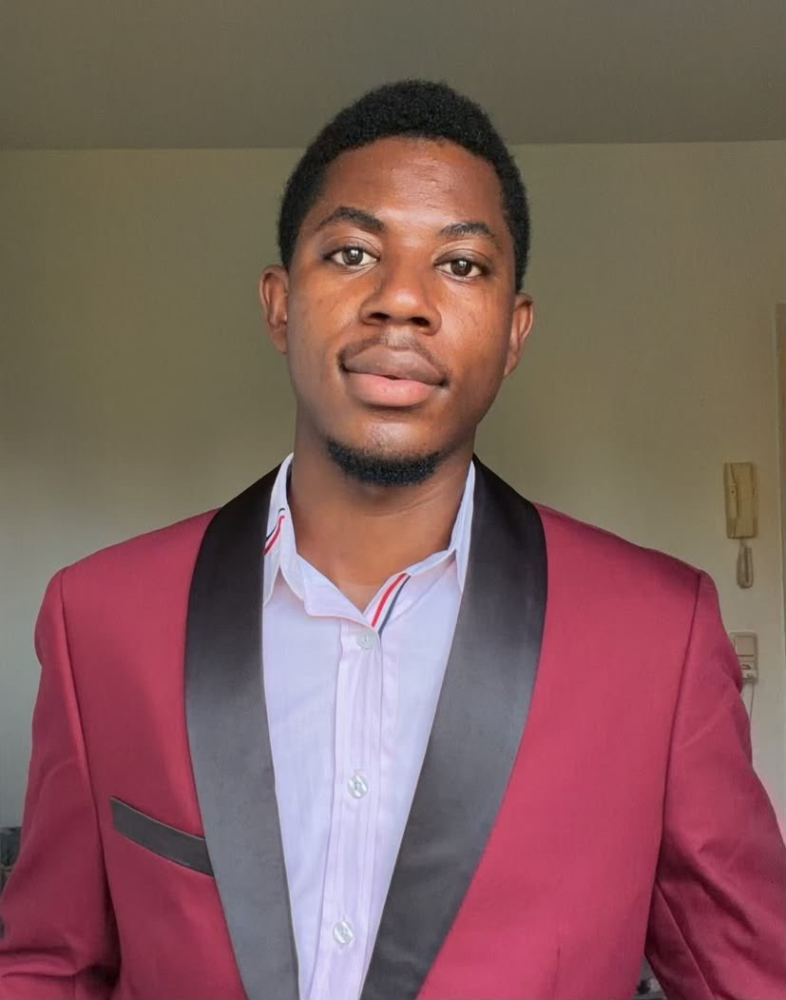

Portfolio · Informatik · Softwareentwicklung
Hallo, ich bin Nestor Sidi Toukea.
Informatikstudent mit Interesse an Softwareentwicklung, Webtechnologien und Datenanalyse.
Ich lerne gerne neue Technologien kennen und setze mein Wissen in Studienprojekten und praktischen Tätigkeiten ein.
- Studium in Kaiserslautern
- Software & Daten
- Teamarbeit & Lernen

01 / Persönlichkeit
Über mich
Was mich antreibt und wie ich arbeite.
Ich studiere Informatik in Kaiserslautern. Besonders interessieren mich die Entwicklung von Software, die Gestaltung von Webanwendungen und der sinnvolle Umgang mit Daten.
Durch Praktika, universitäre Projekte sowie Tätigkeiten als Tutor und Betreuer habe ich gelernt, technische Themen verständlich zu erklären und im Team Lösungen zu erarbeiten.
Mein Ziel ist es, meine theoretischen Kenntnisse weiter in praktischen Softwareprojekten einzusetzen und mich fachlich kontinuierlich zu entwickeln.
02 / Werkzeuge
Meine Fähigkeiten
Technologien, mit denen ich mich im Studium, in Projekten und während der Front-End-Ausbildung beschäftige.
Programmierung & Backend
Daten & Arbeitsweise
Diese Liste zeigt meine bisherigen Berührungspunkte und Lernfelder – nicht für jede Technologie denselben Erfahrungsstand.
03 / Praxis
Meine Projekte
Eine Auswahl meiner Projekte. Technische Details und Links ergänze ich, sobald die Projektbeschreibungen fertig sind.
01Spielprojekt
Sushi Go
Ein Projekt aus meiner bisherigen Projektliste. Die Beschreibung der Spielmechanik, der eingesetzten Technologien und meines Beitrags folgt.
Dokumentation in Vorbereitung
02Softwareprojekt
Smart Mensa
Ein Softwareprojekt aus meinem Studium. Hier werde ich die Funktionen, die Architektur und meinen persönlichen Beitrag dokumentieren.
Dokumentation in Vorbereitung
03Spielprojekt
Tic-Tac-Toe
Ein weiteres Projekt aus meiner Liste. Eine kurze Beschreibung der Spiellogik, der Programmiersprache und des Codes folgt.
Dokumentation in Vorbereitung
04 / Beruflicher Weg
Erfahrungen
Praktische Tätigkeiten, bei denen ich technische und soziale Fähigkeiten einsetzen konnte.
2026
Inspirer · City Hacker School
Hochschule Kaiserslautern
Unterstützung von Schülerinnen und Schülern beim Einstieg in HTML, CSS und JavaScript sowie beim Verstehen grundlegender Programmierkonzepte.
März – Oktober 2026
Werkstudent · Datenbereinigung und Datenanalyse
Landestierärztekammer Rheinland-Pfalz
Aufbereitung, Prüfung und Analyse von Daten zur Verbesserung der Datenqualität und interner Arbeitsabläufe.
Seit Oktober 2026
Tutor · Künstliche Intelligenz
Universität Kaiserslautern
Begleitung von Übungsgruppen und Unterstützung beim Verständnis von Grundlagen und Algorithmen der künstlichen Intelligenz.
Juli – August 2025
Praktikum · Softwareentwicklung
Weptech Elektronik GmbH
Einblicke in Softwareentwicklung, technische Arbeitsabläufe und praktische Programmieraufgaben.
05 / Lernen
Ausbildung
Studium der Informatik
Technische Universität Kaiserslautern / RPTU
Seit Oktober 2024
06 / Austausch
Lass uns in Kontakt bleiben.
Fragen zu meinen Projekten, zur Zusammenarbeit oder zu meinem Werdegang?